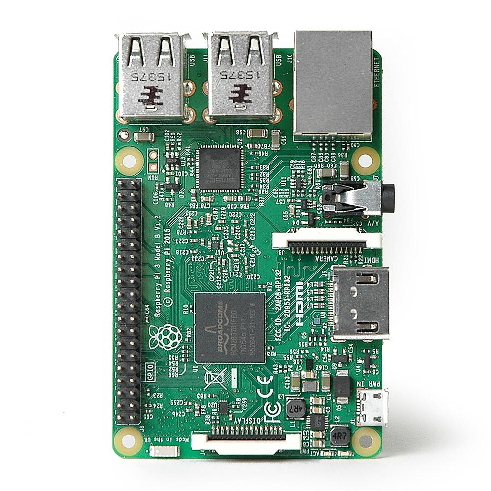

Raspberry Pi + Socket.IO + React = Pixel Art 🤖✨🎨
Adventures in trying out new hardware, code, and having fun in a personal project
By Stephanie Nemeth
Raspberry Pi + Socket.IO + React
= Pixel Art 🤖✨🎨
Creating Interactive Pixel Art on a Raspberry Pi
Stephanie Nemethstephanie.lol
Amsterdam, Netherlands @stephaniecodes
I Also Created a Mobile App Using React-Native!
Stuff For This Project



My Main Requirement
Raspberry Pi must be accessible from the anywhere, not just on localhost!

How does it send messages?

Socket.IO makes communication a breeze
- Enables real-time bidirectional event-based communication
- Works on every platform, browser or device 💪
- Uses the WebSocket protocol with long polling as a fallback option
- Has client-side libraries for Python and React! 🎉
Thank you!

Stephanie Nemethstephanie.lol
Amsterdam, Netherlands @stephaniecodes